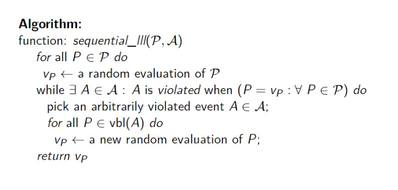
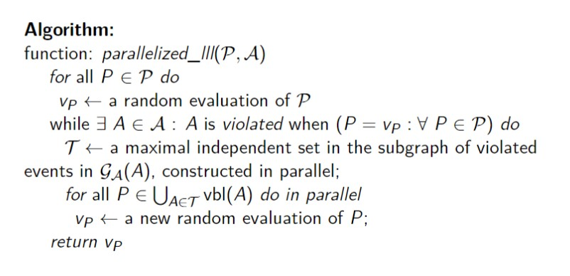

Lovasz Local Lemma & its Applications
A presentation by:
Jyotishka Ray Choudhury (BS1903)
Soutim Das (BS1910)
B.Stat 3rd Year
Indian Statistical Institute, Kolkata
Presentation for Random Graphs
13th May, 2022
Introduction
Let $\mathscr{A} = \{A_1, A_2, \cdots, A_n\}$ be a finite set of events in some
arbitrary probability space, say $(\Omega,\mathscr{A},\mathbb{P})$.
In probabilistic methods, we often try to show whether an object that satisfies
some desired property exists or not, in a finite collection of objects.
Naturally, if such an object exists, there should be a positive probability that
a randomly chosen object from the collection will satisfy the desired property.
Introduction
-
In a probability space $(\Omega,\mathscr{A},\mathbb{P})$, let $E = \{E_1, E_2, \cdots, E_n\}$
be the set of all "bad" events, i.e. the events whose occurence is not desirable. Naturally, we shall be
interested in the occurence of an event that does not belong to $E$. We can refer to such an event
as a "good" event.
-
In order for this to happen, we shall require the condition that
$$\mathbb{P}\left(\bigcap_{i = 1}^n E_i^c\right) > 0$$
-
A very natural question that arises is that is this always possible?
Dependence among events
Independent bad events
-
Note that if all the bad events are independent from each other, and their
probabilities are bounded above by some $p < 1$, then we shall have:
$$\mathbb{P}\left(\bigcap_{i = 1}^n E_i^c\right)
= 1 - \mathbb{P}\left(\bigcup_{i = 1}^n E_i\right)
= 1 - \prod_{i = 1}^n \mathbb{P}(E_i)
> 1 - p^n > 0$$
-
In that case, we can guarantee the occurence of a good event, with positive probability.
Completely disjoint bad events
-
If all the $E_i$'s are disjoint, and they collectively span the whole
$\Omega$, i.e. if $E_1 \cup \cdots \cup E_n = \Omega$, then we shall have:
$$\mathbb{P}\left(\bigcap_{i = 1}^n E_i^c\right)
= 1 - \mathbb{P}\left(\bigcup_{i = 1}^n E_i\right)
= 1 - 1 = 0$$
-
In that case, we can see that a good event is impossible to occur.
But what if the bad events have restricted dependence?
-
If it somehow happens that the bad events have some limited dependent structure,
i.e. if all the $E_i$'s are dependent upon at most $d$ many $E_j$'s, the union bound
fails to deliver a fruitful result, since $$\mathbb{P}\left(\bigcap_{i = 1}^n E_i^c\right)
= 1 - \mathbb{P}\left(\bigcup_{i = 1}^n E_i\right)
\geqslant 1 - \sum_{i = 1}^n \mathbb{P}(E_i)$$ and if the last sum is greater than $1$
(which is very much possible if the $E_i$'s have large overlaps),
the probability statement that we can make is redundant.
But what if the bad events have restricted dependence?
-
In adverse situations like this, the Lovasz Local Lemma comes as a saviour.
-
Under some restricted dependence among the bad events, Lovasz Local Lemma
ensures that a good event will occur with positive probability.
We shall be discussing two versions of the Lovasz Local Lemma, viz.
- Symmetric Lovasz Local Lemma
- Asymmetric / General Lovasz Local Lemma
Mutual Independence
An event $A$ in an arbitrary probability space is mutually independent
of a set $\mathscr{B}$ of some other events, if for every $S \in \mathscr{B}$, we have
$$\mathbb{P}\left(A~\bigg\vert \bigcap_{B \in S} B\right) = \mathbb{P}(A)$$
This should be noted that an event may be pairwise independent to every event in $\mathscr{B}$,
but the events may not be mutually independent.
Symmetric Lovasz Local Lemma
Suppose $\mathscr{A} = \{A_1, \cdots, A_n\}$ is a set of events in an
arbitrary probability space. If for all $i = 1,2, \cdots, n$,
-
$\exists~D_i \subset \mathscr{A}$, with $|D_i| \leqslant d,$ such that
$A_i$ is mutually independent of $\mathscr{A} \setminus D_i$
-
$\mathbb{P}(A_i) \leqslant p$
-
$p(d+1) > \frac{1}{e}$
then we shall have:
$$\mathbb{P}\left(\bigcap_{i = 1}^n A_i^c\right) > 0$$
Asymmetric Lovasz Local Lemma
Suppose $\mathscr{A} = \{A_1, \cdots, A_n\}$ is a set of events in an
arbitrary probability space. If for all $i = 1,2, \cdots, n$,
-
$\exists~D_i \subset \mathscr{A}$, with $|D_i| \leqslant d,$ such that
$A_i$ is mutually independent of $\mathscr{A} \setminus D_i$
-
$\exists~x_i \in [0,1)~$ such that $~\displaystyle\mathbb{P}(A_i) \leqslant
x_i\cdot \prod_{j : A_j \in D_i} \big(1 - x_j\big)$
then we shall have:
$$\mathbb{P}\left(\bigcap_{i = 1}^n A_i^c\right) \geqslant \prod_{i = 1}^n
(1 - x_i) > 0$$
Proof of Symmetric LLL
-
If $d = 0$, then all the $E_i$'s are independent, and symmetric LLL holds.
-
If $d > 0$, let us put $x_i = \frac{1}{d+1}$, for all $i = 1,2, \cdots, n$.
-
We shall be using the fact that for all $x\geqslant 0$,
$\left(1-\frac{1}{x+1}\right)^x \geqslant \frac{1}{e} \cdot$
-
Thus, we have $$x_i \prod_{i = 1}^n \big(1-x_j\big) \geqslant
\frac{1}{d+1}\left(1-\frac{1}{d+1}\right)^d \geqslant \frac{1}{e(d+1)} \geqslant
p \geqslant \mathbb{P}(A_i)$$
-
Thus, by Asymmetric LLL, $$\mathbb{P}\left(\bigcap_{i = 1}^n E_i^c\right) >
\left(1-\frac{1}{d+1}\right)^n > 0$$
Some Applications of LLL
Positioning of Crystal Beads
Suppose $11n$ points are placed around a circle and colored with $n$ different colors
in such a way that each color is applied to exactly $11$ points. In any such coloring,
there must be a set of $n$ points containing one point of each color but not containing
any pair of adjacent points.
-
Imagine picking a point of each color randomly, with all points equally likely
(i.e., having probability $\frac{1}{11}$) to be chosen. The $11n$ different events we want
to avoid correspond to the $11n$ pairs of adjacent points on the circle. For each
pair our odds of picking both points in that pair is at most $\frac{1}{121}$ (exactly $\frac{1}{121}$)
if the two points are of different colors, otherwise $0$), so we will take $p = \frac{1}{121}$.
Positioning of Crystal Beads
-
Whether a given pair (a, b) of points is chosen depends only on what
happens in the colors of a and b, and not at all on whether any other
collection of points in the other n − 2 colors are chosen. This implies
the event "a and b are both chosen" is dependent only on those pairs of
adjacent points which share a color either with a or with b.
-
There are 11 points on the circle sharing a color with a (including a
itself), each of which is involved with 2 pairs. This means there are
21 pairs other than (a, b) which include the same color as a, and the
same holds true for b. The worst that can happen is that these two sets
are disjoint, so we can take d = 42 in the lemma. This gives $ep(d+1) \approx 0.966
< 1$.
-
By LLL, there is a positive probability that none of the bad events occur,
meaning that our set contains no pair of adjacent points. This implies that a set
satisfying our conditions must exist.
2-colorability of Hypergraphs
Suppose $H$ is a $k$-uniform, $k$-regular hypergraph.
What conditions on H will ensure that $H$ is 2-colorable?
-
Let each vertex toss a fair coin.
If an outcome is head, we color that vertex red, and blue otherwise.
-
For each edge $A$, consider the event $E_A$ that $A$ is monochrome.
Then 2-colorability of $H$ is equivalent the case that none of the events
$E_A$ occur, i.e., the event $\cap_{A\in H} E_A^c$.
-
Now note that $\mathbb{P}(E_A) = \dfrac{2}{2^k} = \dfrac{1}{2^{k-1}}$.
2-colorability of Hypergraphs
-
Now, $E_A$ is independent from $E_B$ iff $A \cap B = \varnothing$.
Since edge $A$ contains $k$ vertices, each of which is contained in
$(k-1)$ other edges, we obtain an upper bound for the dependence degree
as $|\{B \in H | A \cap B \neq \varnothing\}| \leqslant (k-1)k$.
-
Thus, if $$\dfrac{k(k-1)+1}{2^{k-1}} \leqslant \dfrac{1}{e},$$ we can guarantee
that $\mathbb{P}\left(\cap_{A\in H} E_A^c\right) > 0$, thanks to LLL.
-
One can show that for $k \geqslant 9$, the above inequality holds good.
Vertex Colouring
Let $G$ be a graph with degree at most $\Delta$.
Let $X_v$ be the random variable that represents the
color of the vertex $v$. Let $X_v$ be a independent and uniformly
chosen over the set $\{1, . . . , C\}$. What will be a lower bound on $C$?
-
For every edge $e$, we define our bad event $A_e$ that is
the indicator variable for both its vertices receiving identical
colour.
-
Since the colouring done uniformly at random, so $\mathbb{P}(A_e) = \frac{1}{C}$.
-
Note that the event $A_e$ does not depend on any
other event $A_f$, if the edges $e$ and $f$ do not share a common vertex.
So, the event $A_e$ depends on at most $2(\Delta - 1)$ other bad events.
-
Thus, by LLL, a good event, i.e. a feasible colouring is possible if
$$\dfrac{1}{C}\big[2(\Delta - 1) + 1\big] \leqslant \dfrac{1}{e}\quad\Longleftrightarrow\quad C\geqslant e\big[2(\Delta - 1) + 1\big]$$
Asymmetric LLL revisited
For the sake of notational convenience, we are stating the asymmetric LLL with slightly different notations.
Let $\mathcal{A}$ be a finite set of events in a probability space $\Omega$. For $A \in \mathcal{A}$ let $\Gamma(A)$ be a subset of $\mathcal{A}$ satisfying that $A$ is independent from the collection of events $\mathcal{A} \backslash(\{A\} \cup \Gamma(A))$. If there exists an assignment of reals $x: \mathcal{A} \rightarrow(0,1)$ such that:
$$
\forall A \in \mathcal{A}: \mathbb{P}(A) \leq x(A) \prod_{B \in \Gamma(A)}(1-x(B)),
$$
then the probability of avoiding all events in $\mathcal{A}$ is at least $\prod_{A \in \mathcal{A}}(1-x(A))$, in particular it is positive.
Moser-Tardos Algorithm for LLL
Previous Algorithmic Approaches
-
Beck (1991): If in a hypergraph, every edge contains at least $k$ vertices and shares common vertices with no more than roughly $2^{\frac{k}{48}}$ other edges, then a polytime algorithm can 2-color the vertices without producing a monochromatic edge.
-
Alon (1991): Improved Beck's threshold to $2^{\frac{k}{8}}$ edges using a simple and randomized variant of Beck's algorithm .
-
Czumay and Scheideler (2000): Extended known algorithmic versions to general cases where the edges of the hypergraph in question need not be uniform.
-
Srinivasan (2008): Improved Alon's threshold to $2^{\frac{k}{4}}$ edges along with a series of other improvements.
-
Moser (2009): Improved Srinivasan's threshold to $\frac{2^{k}}{32}$ edges.
Algorithm: Moser-Tardos (Sequential Solver)
-
The authors only consider events determined by different subsets of mutually independent random variables.
-
Let $\mathcal{P}$ be a finite collection of mutually independent random variables defined on a fixed probability space $\Omega$.
-
We shall consider events $A$ that are determined by the values of some $S\subseteq\mathcal{P}$ of these variables. Let $\mathcal{A}$ denote the finite family of events in $\Omega$ determined by $\mathcal{P}.$
-
In such a case, we say that an evaluation of the variables in $S$ \emph{violates} $A$ if it makes $A$ happen.
-
If $\mathcal{A}$ is determined by $\mathcal{P},$ then $\exists$ a minimal subset that completely determines $A$ $\in$ $\mathcal{A}.$ We denote this set of variables by vbl$(A)$.
-
We define dependency graph $\mathcal{G}_{\mathcal{A}}$ for $\mathcal{A}$ as a graph with vertex set $\mathcal{A}$ and edge set:
$$\mathcal{E} = \{(A,B):A\neq B \text{ but } \text{vbl}(A)\cap\text{vbl}(B)\neq\Phi\}$$
-
We further define $\Gamma_{\mathcal{A}}(A)$ to be the neighbourhood of $A$ in $\mathcal{G}.$
Algorithm: Moser-Tardos (Sequential Solver)

Complexity: Moser-Tardos (Sequential Solver)
Consider the setup of the asymmetric LLL. If the LLL conditions are satisfied for $\mathcal{A},$ then $\exists$ an assignment of the variables in $\mathcal{P}$ not violating $\mathcal{A}.$ Further the expected total number of resampling steps before termination is at most $$\sum_{A\in\mathcal{A}}\frac{x(A)}{1-x(A)}$$
Algorithm: Moser-Tardos (Parallelized Variant)
-
We start with the evaluation of the variables at a random point in $\Omega,$ then in every step we select a maximal independent set $\mathcal{T}$ in the subgraph of the dependency graph spanned by all the violated events.
-
We then resample the variables associated with $T$ parallelly, i.e., we resample $\bigcup_{A\in\mathcal{A}}\text{vbl}(A)$ while keeping the variables in $\mathcal{P}\setminus\bigcup_{A\in\mathcal{A}}\text{vbl}(A)$ fixed.
Algorithm: Moser-Tardos (Parallelized Variant)

Complexity: Moser-Tardos (Parallelized Variant)
Consider the setup of the asymmetric LLL. We tweak the LLL assumptions slightly as follows:
Suppose $\epsilon>0$ and $\exists$ an assignment $x:\mathcal{A}\rightarrow(0,1)$ such that:
$$\forall A \in \mathcal{A}:\hspace{3mm}\mathbb{P}(A)\leq(1-\epsilon)x(A)\prod_{B\in\Gamma_{\mathcal{A}}(A)}(1-x(B)).$$
Then the parallel version of the algorithm performs an expected $\mathcal{O}(\frac{1}{\epsilon}\log\sum_{A\in\mathcal{A}}\frac{x(A)}{1-x(A)})$ number of resampling steps before termination.